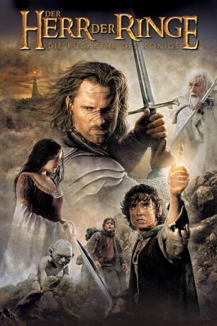

Auszeichnungen: 11 Oscars gewonnen 4 GoldenGlobes gewonnen 1 BAFTA-Awards gewonnen
 gesehen am 01.11.2015
gesehen am 01.11.2015Alternativ: The Lord of the Rings: The Return of the King
Auszeichnungen: 11 Oscars gewonnen 4 GoldenGlobes gewonnen 1 BAFTA-Awards gewonnen gesehen am 01.11.2015
 
 IMDB-Wertung: 8.9 / 10
IMDB-Wertung: 8.9 / 10  IMDB-TOP-Platzierung: 7
IMDB-TOP-Platzierung: 7  Metascore:
Metascore: 
Saurons Heer will Minas Tirith angreifen, die in Felsen errichtete Hauptstadt von Gondor. Angesichts der Bedrohlichkeit des feindlichen Heeres wiegt es umso schwerer, dass Gondors König fehlt und nur der schwächliche Truchsess Denethor über das einst mächtige Königreich wacht. Wird Aragorn die Kraft aufbringen, jene Aufgabe zu übernehmen, für die sein Schicksal ihn bestimmt hat? Während Gandalf verzweifelt versucht, die mutlosen Kämpfer von Gondor zu motivieren, sammelt Théoden die Krieger von Rohan, um am Kampf teilzunehmen. Aber obwohl sie tapfer und leidenschaftlich Widerstand leisten, haben die Streitkräfte der Menschen dem überwältigenden Ansturm der feindlichen Legionen gegen das Königreich kaum etwas entgegenzusetzen. Jeder Sieg fordert große Opfer. Trotz der starken Verluste stellen sich die Gefährten der größten Schlacht ihres Lebens - vereint durch ein einziges Ziel: Sauron muss so lange abgelenkt werden, bis Frodo den Ring vernichtet hat...
Jahr: 2003
Dauer: 201 Minuten
FSK: 12
Land: USA Studio: New Line CinemaTonspuren: DTS-HD - ,
Untertitel: Deutsch, Englisch,
Auflösung: 1080p (1920x1080) Größe: 67686 MB
Genre: Action, Drama, Abenteuer, Fantasy
Regisseur:  Peter Jackson
Peter Jackson
Drehbuch: J.R.R. Tolkien, Fran Walsh, Philippa Boyens, Peter Jackson
Soundtrack: Howard Shore
Darsteller:
 Sean Astin als Sam
Sean Astin als Sam Sean Bean als Boromir
Sean Bean als Boromir Cate Blanchett als Galadriel
Cate Blanchett als Galadriel Orlando Bloom als Legolas
Orlando Bloom als Legolas Billy Boyd als Pippin
Billy Boyd als Pippin Alistair Browning als Damrod
Alistair Browning als Damrod Marton Csokas als Celeborn
Marton Csokas als Celeborn Bernard Hill als Theoden
Bernard Hill als Theoden Ian Holm als Bilbo
Ian Holm als Bilbo Lawrence Makoare als Witchking / Gothmog
Lawrence Makoare als Witchking / Gothmog Ian McKellen als Gandalf
Ian McKellen als Gandalf Dominic Monaghan als Merry
Dominic Monaghan als Merry Viggo Mortensen als Aragorn
Viggo Mortensen als Aragorn John Noble als Denethor
John Noble als Denethor Miranda Otto als Eowyn
Miranda Otto als Eowyn Bruce Phillips als Grimbold
Bruce Phillips als Grimbold Shane Rangi als Harad Leader 2
Shane Rangi als Harad Leader 2 John Rhys-Davies als Gimli
John Rhys-Davies als Gimli Andy Serkis als Gollum / Smeagol
Andy Serkis als Gollum / Smeagol Joel Tobeck als Orc Lieutenant 1
Joel Tobeck als Orc Lieutenant 1 Liv Tyler als Arwen
Liv Tyler als Arwen Karl Urban als Eomer
Karl Urban als Eomer Stephen Ure als Gorbag
Stephen Ure als Gorbag Hugo Weaving als Elrond
Hugo Weaving als Elrond David Wenham als Faramir
David Wenham als Faramir Elijah Wood als Frodo
Elijah Wood als Frodo Sala Baker als Featured Orc
Sala Baker als Featured Orc Jed Brophy als Featured Orc
Jed Brophy als Featured Orc Phil Grieve als Orc commander, Extended Edition
Phil Grieve als Orc commander, Extended Edition Christopher Lee als Saruman, extended edition
Christopher Lee als Saruman, extended edition Bruce Spence als Black Lieutenant, extended edition
Bruce Spence als Black Lieutenant, extended edition Peter Jackson als Corsair Bosun , uncredited
Peter Jackson als Corsair Bosun , uncreditedDatei: X:\6-Hexalogie(A-Z)\Herr der Ringe - Hobbit\Herr der Ringe 3 - Die Rückkehr des Königs (2003, FSK12, 1920x1080).mkv seit 21.02.2015
Festplatte: HD Collection-3(N-Z)-6(A-Z)
 Es gibt insgesamt 12 Filme in der Gruppe '6-Hexalogie(A-Z)\Herr der Ringe - Hobbit'
Es gibt insgesamt 12 Filme in der Gruppe '6-Hexalogie(A-Z)\Herr der Ringe - Hobbit'